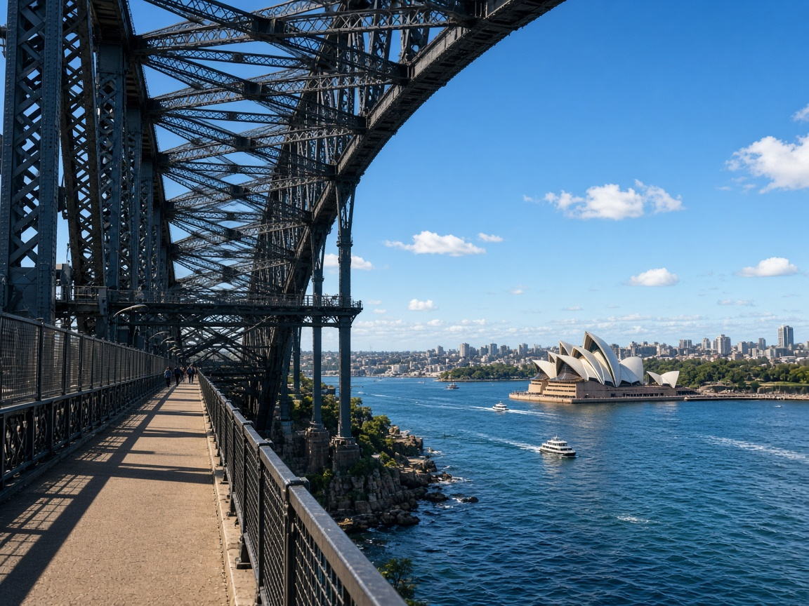
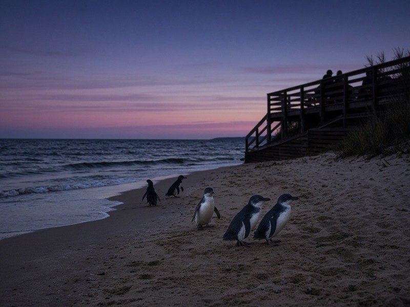
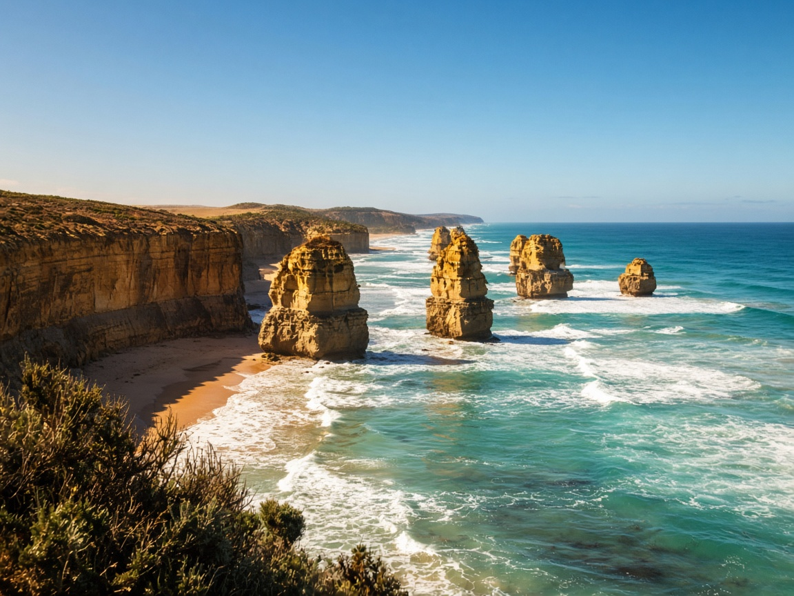
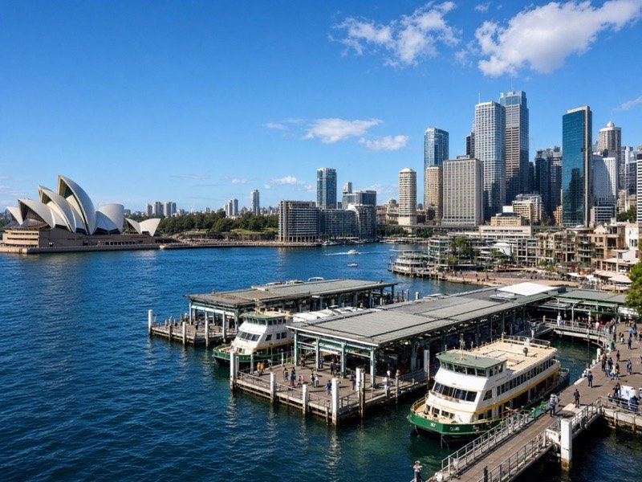
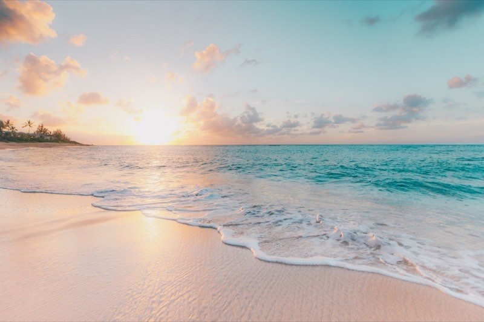
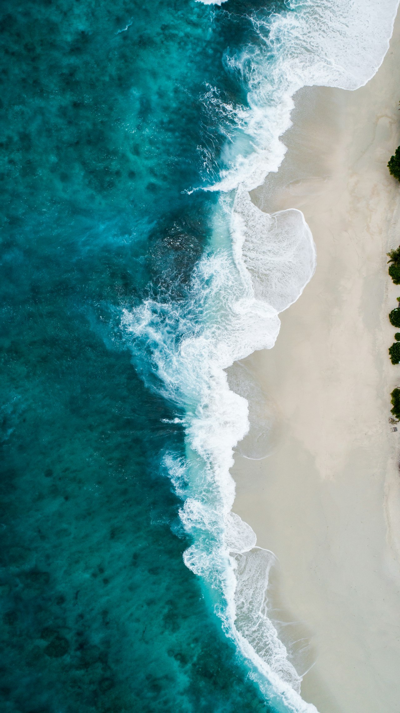

Uni Melbourne
Parkville · Old Quad
9/26

2026 · Australia
九月底南半球入春，行程从墨尔本切入，再飞悉尼。先在墨尔本五晚 — laneway、咖啡、大洋路和企鹅岛；再转悉尼，串港湾、Gerringong 南海岸和 Bondi。
两城同在东海岸，节奏相反：墨尔本宜慢走看展，悉尼交给轮渡与沙滩。白天十来度到二十出头，东岸外座头鲸的尾声还赶得上。





Wrap-up
前半程在墨尔本慢慢沉下来 — 咖啡、巷弄、近郊的一日游。10/1 一过，节奏换成悉尼的亮：海港、沙滩、南向的火车。期待的是九月底的风还不冷，葡萄园刚绿，海面上也许还能碰见最后一波鲸。
从 laneway 的咖啡香到大洋路的十二门徒，从 Yarra Valley 的葡萄园到 Circular Quay 的日落，十二天是一条从内陆慢走滑向海港的线。
Scarlett & LiuJia · Shanghai ⇄ Australia · via HKG · 2026